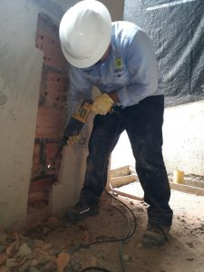
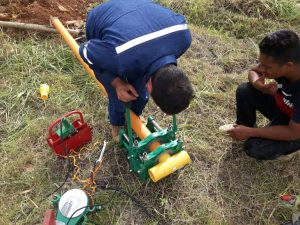
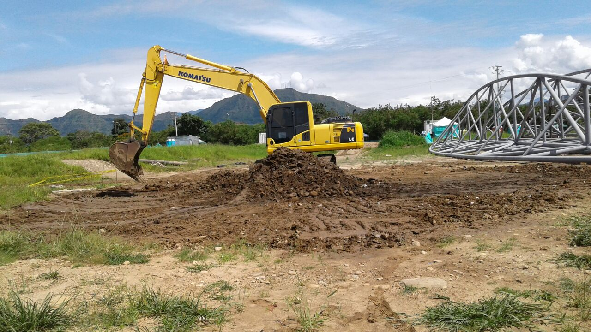

CONSULTORÍA
- Estudios de suelos.
- Estudios geoeléctricos de suelos.
- Estudios de permeabilidad de suelos.
- Estudios de diseño para dragados.
- Estudios y diseños para canales de agua lluvia y ríos.
- Estudios y diseños geométricos de vías.
- Estudios y diseños de muros de contención.
- Estudios y diseños estructurales y arquitectónicos para
viviendas, edificios
institucionales o
comerciales.
- Estudios y diseños de redes y de transmisión de energía.
CONSTRUCTORA
- Construcción de canales de agua lluvia.
- Estudios geoeléctricos de suelos.Construcción de terraplenes
y vías
terciarias, secundarias y
primarias.
- Construcción de muros de contención.
- Construcción de viviendas, edificios institucionales o comerciales.
- Construcción de muros de gaviones.
- Construcción de redes de transmisión de energía.
- Estabilización de Taludes.
- Construcciones de obras de protecciones de ríos.
- Construcción y mantenimiento de instalaciones locativas.
- Construcción de encerramientos de metálicos.
- Construcción de cerchas metálicas.


EQUIPOS
- Alquiler de maquinaria amarilla
- Retroexcavadoras
- Orugadas
- Bulldozer
- Volquetas
- Camabajas
- Carrotanques
- tracto camiones